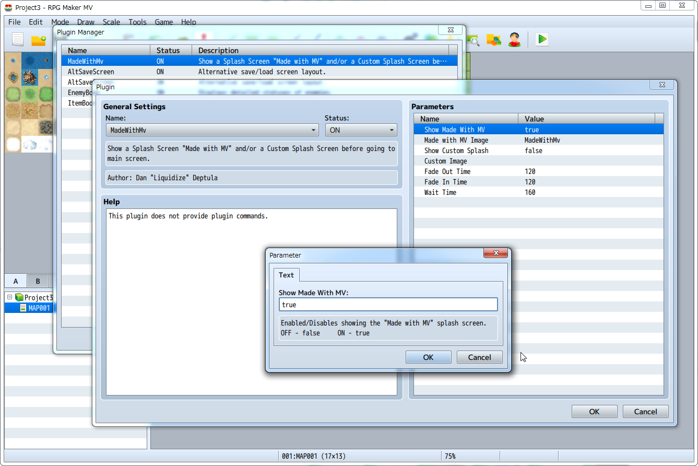

Plugins
The traditional Script Editor has been removed, and easy to use plugin functions have been adopted.
There are official plugins included in the plugins, and these can be used right from the start.
* Please refer to [Enabling Plugins] and [Using Official Plugins] for more information.

* Additionally, refer to [Plugin Specifications] regarding plugin specifications.